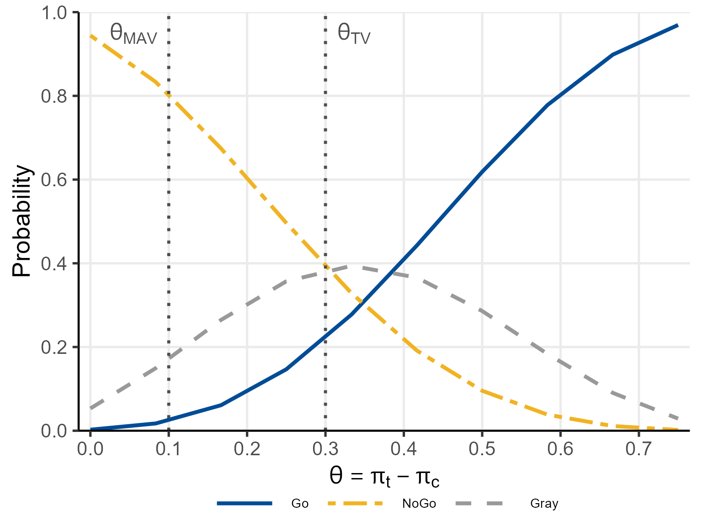
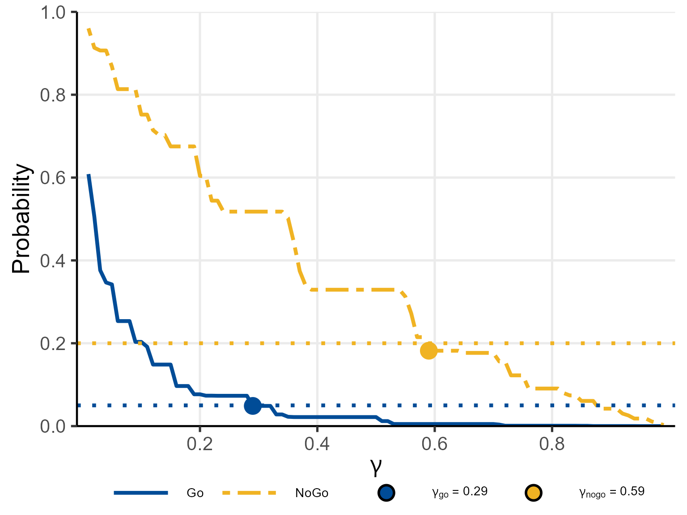

Introduction
The BayesianQDM package provides a Bayesian Quantitative Decision-Making (QDM) framework for proof-of-concept (PoC) clinical trials. The framework supports a three-zone Go/NoGo/Gray decision rule, in which a Go decision recommends proceeding to the next development phase, a NoGo decision recommends stopping development, and a Gray decision indicates insufficient evidence to make a definitive recommendation.
The primary use case is the evaluation of operating characteristics for a PoC trial under a specified decision rule and sample size. Specifically, the package can answer the following practical questions:
- What is the probability of making a Go, NoGo, or Gray decision under a given true treatment effect?
- What decision thresholds best control the false Go rate and false NoGo rate simultaneously?
Covered Scenarios
The package supports a wide range of PoC trial configurations through the combination of the following dimensions.
Endpoint Type
- Binary endpoint: e.g., response rate, where the treatment effect is the difference in response rates .
- Continuous endpoint: e.g., a biomarker or clinical score, where the treatment effect is the difference in means .
Both single-endpoint and two co-primary endpoint settings are available.
Probability Metric
Two complementary metrics are implemented to quantify evidence from the PoC data:
- Posterior probability: the probability, given the observed PoC data, that the true treatment effect exceeds a clinically meaningful threshold. This metric directly reflects the evidence accumulated in the PoC trial.
- Posterior predictive probability: the probability that a future (e.g., Phase III) trial would achieve a pre-specified success criterion, given the observed PoC data. This metric is forward-looking and accounts for uncertainty in future trial outcomes.
Study Design
Three study designs are supported:
- Controlled design: a standard parallel-group trial with concurrent treatment and control groups.
- Uncontrolled design: a single-arm trial in which the control distribution is specified from prior knowledge rather than observed data.
- External design: a design that incorporates historical or external data for the treatment group, the control group, or both, via a power prior with a user-specified borrowing weight .
Package Structure and Function Overview
| Function | Description |
|---|---|
| pbayespostpred1bin() | Posterior/predictive probability, single binary endpoint |
| pbayespostpred1cont() | Posterior/predictive probability, single continuous endpoint |
| pbayespostpred2bin() | Region probabilities, two binary endpoints |
| pbayespostpred2cont() | Region probabilities, two continuous endpoints |
| pbayesdecisionprob1bin() | Go/NoGo/Gray decision probabilities, single binary endpoint |
| pbayesdecisionprob1cont() | Go/NoGo/Gray decision probabilities, single continuous endpoint |
| pbayesdecisionprob2bin() | Go/NoGo/Gray decision probabilities, two binary endpoints |
| pbayesdecisionprob2cont() | Go/NoGo/Gray decision probabilities, two continuous endpoints |
| getgamma1bin() | Optimal Go/NoGo thresholds, single binary endpoint |
| getgamma1cont() | Optimal Go/NoGo thresholds, single continuous endpoint |
| getgamma2bin() | Optimal Go/NoGo thresholds, two binary endpoints |
| getgamma2cont() | Optimal Go/NoGo thresholds, two continuous endpoints |
| pbetadiff() | CDF of difference of two Beta distributions |
| pbetabinomdiff() | Beta-binomial posterior predictive probability |
| ptdiff_NI() | CDF of difference of two t-distributions (numerical integration) |
| ptdiff_MC() | CDF of difference of two t-distributions (Monte Carlo) |
| ptdiff_MM() | CDF of difference of two t-distributions (moment-matching) |
| rdirichlet() | Random sampler for the Dirichlet distribution |
| getjointbin() | Joint binary probability from marginals and correlation |
| allmultinom() | Enumerate all multinomial outcome combinations |
Quick-Start Examples
Posterior Probability: Single Binary Endpoint
# P(pi_treat - pi_ctrl > 0.05 | data)
# Observed: 7/10 responders (treatment), 3/10 (control)
pbayespostpred1bin(
prob = 'posterior', design = 'controlled', theta0 = 0.05,
n_t = 10, n_c = 10, y_t = 7, y_c = 3,
a_t = 0.5, b_t = 0.5, a_c = 0.5, b_c = 0.5,
m_t = NULL, m_c = NULL, z = NULL,
ne_t = NULL, ne_c = NULL, ye_t = NULL, ye_c = NULL,
alpha0e_t = NULL, alpha0e_c = NULL,
lower.tail = FALSE
)
#> [1] 0.941619Posterior Probability: Single Continuous Endpoint
# P(mu_treat - mu_ctrl > 1.0 | data) using MM method
# Observed: mean 3.5 (treatment), 1.2 (control); SD ~ 2.0
pbayespostpred1cont(
prob = 'posterior', design = 'controlled', prior = 'vague',
CalcMethod = 'MM', theta0 = 1.0, nMC = NULL,
n_t = 10, n_c = 10,
bar_y_t = 3.5, s_t = 2.0,
bar_y_c = 1.2, s_c = 2.0,
m_t = NULL, m_c = NULL,
kappa0_t = NULL, kappa0_c = NULL, nu0_t = NULL, nu0_c = NULL,
mu0_t = NULL, mu0_c = NULL, sigma0_t = NULL, sigma0_c = NULL,
r = NULL,
ne_t = NULL, ne_c = NULL, alpha0e_t = NULL, alpha0e_c = NULL,
bar_ye_t = NULL, se_t = NULL, bar_ye_c = NULL, se_c = NULL
)
#> [1] 0.093935Go/NoGo Decision: Operating Characteristics
# Operating characteristics for single binary endpoint
oc_res <- pbayesdecisionprob1bin(
prob = 'posterior',
design = 'controlled',
theta_TV = 0.30, theta_MAV = 0.10, theta_NULL = NULL,
gamma_go = 0.80, gamma_nogo = 0.20,
pi_t = seq(0.15, 0.9, l = 10),
pi_c = rep(0.15, 10),
n_t = 10, n_c = 10,
a_t = 0.5, b_t = 0.5, a_c = 0.5, b_c = 0.5,
z = NULL, m_t = NULL, m_c = NULL,
ne_t = NULL, ne_c = NULL, ye_t = NULL, ye_c = NULL,
alpha0e_t = NULL, alpha0e_c = NULL
)
print(oc_res)
#> Go/NoGo/Gray Decision Probabilities (Single Binary Endpoint)
#> ----------------------------------------------------------------
#> Probability type : posterior
#> Design : controlled
#> Threshold(s) : TV = 0.3, MAV = 0.1
#> Go threshold : gamma_go = 0.8
#> NoGo threshold : gamma_nogo = 0.2
#> Sample size : n_t = 10, n_c = 10
#> Prior (Beta) : a_t = 0.5, a_c = 0.5, b_t = 0.5, b_c = 0.5
#> Miss handling : error_if_Miss = TRUE, Gray_inc_Miss = FALSE
#> ----------------------------------------------------------------
#> pi_t pi_c Go Gray NoGo
#> 0.1500000 0.15 0.0025 0.0532 0.9443
#> 0.2333333 0.15 0.0174 0.1494 0.8332
#> 0.3166667 0.15 0.0609 0.2647 0.6744
#> 0.4000000 0.15 0.1468 0.3569 0.4963
#> 0.4833333 0.15 0.2777 0.3940 0.3283
#> 0.5666667 0.15 0.4426 0.3658 0.1915
#> 0.6500000 0.15 0.6186 0.2860 0.0955
#> 0.7333333 0.15 0.7781 0.1835 0.0384
#> 0.8166667 0.15 0.8984 0.0904 0.0112
#> 0.9000000 0.15 0.9693 0.0289 0.0018
#> ----------------------------------------------------------------
plot(oc_res, base_size = 20)
Optimal Threshold Search
# Find gamma_go : smallest gamma s.t. Pr(Go) < 0.05 under Null (pi_t = pi_c = 0.15)
# Find gamma_nogo: smallest gamma s.t. Pr(NoGo) < 0.20 under Alt (pi_t = 0.35, pi_c = 0.15)
gg_res <- getgamma1bin(
prob = 'posterior', design = 'controlled',
theta_TV = 0.30, theta_MAV = 0.10, theta_NULL = NULL,
pi_t_go = 0.15, pi_c_go = 0.15,
pi_t_nogo = 0.35, pi_c_nogo = 0.15,
target_go = 0.05, target_nogo = 0.20,
n_t = 12L, n_c = 12L,
a_t = 0.5, b_t = 0.5, a_c = 0.5, b_c = 0.5,
z = NULL, m_t = NULL, m_c = NULL,
ne_t = NULL, ne_c = NULL, ye_t = NULL, ye_c = NULL,
alpha0e_t = NULL, alpha0e_c = NULL
)
plot(gg_res, base_size = 20)
Further Reading
-
vignette("single-binary")— detailed examples for a single binary endpoint, covering all three designs and prior specifications. -
vignette("single-continuous")— detailed examples for a single continuous endpoint, covering all three designs and calculation methods. -
vignette("two-binary")— detailed examples for two binary co-primary endpoints. -
vignette("two-continuous")— detailed examples for two continuous co-primary endpoints.